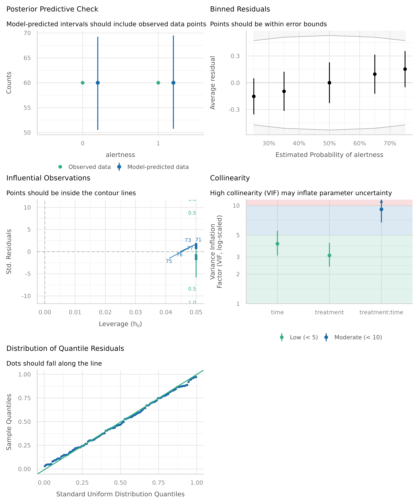
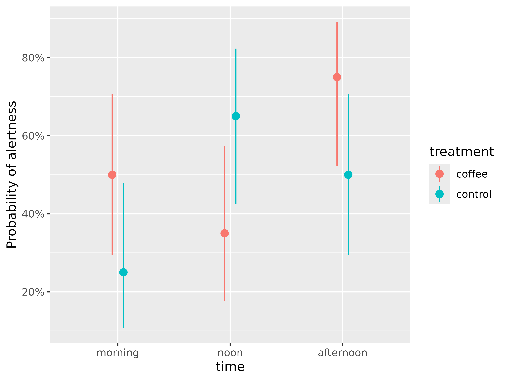

Analytic workflow: A complete workflow using easystats
Source:vignettes/workflow_easystats.Rmd
workflow_easystats.RmdThis vignette demonstrates a typical workflow using easystats packages, with a logistic regression model as an example. We will explore various aspects of the model, such as model coefficients, model fit, predictions, and pairwise comparisons. Let’s get started!
Preparing the data
The very first step is usually importing and preparing some data
(recoding, re-shaping data and so on - the usual data wrangling tasks),
which is easily done using the datawizard package. In
this example, we use datawizard only for some minor recodings.
The coffee_data data set is included in the
modelbased package. The data set contains information on the
effect of coffee consumption on alertness over time. The outcome
variable is binary (alertness), and the predictor variables are coffee
consumption (treatment) and time.
library(datawizard) # for data management, e.g. recodings
data(coffee_data, package = "modelbased")
# dichotomize outcome variable
coffee_data$alertness <- categorize(coffee_data$alertness, lowest = 0)
# rename variable
coffee_data <- data_rename(coffee_data, select = c(treatment = "coffee"))Sample description
In a next step, it might make sense to look at the data. E.g., a
frequency table using data_tabulate(), or a description of
the most important sample characteristics using
report_sample(). The latter is usually already a table
shown in publications.
Functions to create descriptive tables or text reports are located in the datawizard and report packages.
library(report)
# Frequency table
data_tabulate(coffee_data, c("treatment", "time"))
#> treatment (treatment) <categorical>
#> # total N=120 valid N=120
#>
#> Value | N | Raw % | Valid % | Cumulative %
#> --------+----+-------+---------+-------------
#> coffee | 60 | 50.00 | 50.00 | 50.00
#> control | 60 | 50.00 | 50.00 | 100.00
#> <NA> | 0 | 0.00 | <NA> | <NA>
#>
#> time (time) <categorical>
#> # total N=120 valid N=120
#>
#> Value | N | Raw % | Valid % | Cumulative %
#> ----------+----+-------+---------+-------------
#> morning | 40 | 33.33 | 33.33 | 33.33
#> noon | 40 | 33.33 | 33.33 | 66.67
#> afternoon | 40 | 33.33 | 33.33 | 100.00
#> <NA> | 0 | 0.00 | <NA> | <NA>
# Cross table
data_tabulate(coffee_data, "treatment", by = "time")
#> treatment | morning | noon | afternoon | <NA> | Total
#> ----------+---------+------+-----------+------+------
#> coffee | 20 | 20 | 20 | 0 | 60
#> control | 20 | 20 | 20 | 0 | 60
#> <NA> | 0 | 0 | 0 | 0 | 0
#> ----------+---------+------+-----------+------+------
#> Total | 40 | 40 | 40 | 0 | 120
# Sample description
report_sample(
coffee_data,
by = "treatment",
select = c("alertness", "time"),
ci = 0.95
)
#> # Descriptive Statistics
#>
#> Variable | coffee (n=60) | control (n=60) | Total (n=120)
#> -------------------------------------------------------------------------------
#> Mean alertness (SD) | 0.53 (0.50) | 0.47 (0.50) | 0.50 (0.50)
#> time [morning], % | 33.3 [22.7, 45.9] | 33.3 [22.7, 45.9] | 33.3 [25.5, 42.2]
#> time [noon], % | 33.3 [22.7, 45.9] | 33.3 [22.7, 45.9] | 33.3 [25.5, 42.2]
#> time [afternoon], % | 33.3 [22.7, 45.9] | 33.3 [22.7, 45.9] | 33.3 [25.5, 42.2]Fitting and exploring the model - model coefficients
Let’s start by fitting an example model and examining the model
coefficients. The package that manages everything related to model
coefficients is the parameters package. We can use the
model_parameters() function to extract the coefficients
from the model. By setting exponentiate = TRUE, we can
obtain the odds ratios for the coefficients.
library(parameters)
# model
model <- glm(alertness ~ treatment * time, data = coffee_data, family = binomial())
# coefficients
model_parameters(model, exponentiate = TRUE)
#> Parameter | Odds Ratio | SE | 95% CI | z | p
#> -----------------------------------------------------------------------------------------------
#> (Intercept) | 1.00 | 0.45 | [0.41, 2.44] | -1.54e-15 | > .999
#> treatment [control] | 0.33 | 0.23 | [0.08, 1.23] | -1.61 | 0.108
#> time [noon] | 0.54 | 0.35 | [0.15, 1.90] | -0.96 | 0.339
#> time [afternoon] | 3.00 | 2.05 | [0.81, 12.24] | 1.61 | 0.108
#> treatment [control] × time [noon] | 10.35 | 9.85 | [1.66, 70.73] | 2.45 | 0.014
#> treatment [control] × time [afternoon] | 1.00 | 0.97 | [0.15, 6.74] | -6.10e-16 | > .999
#>
#> Uncertainty intervals (profile-likelihood) and p-values (two-tailed) computed using a Wald z-distribution approximation.The model coefficients are difficult to interpret directly, in particular since we have an interaction effect. Instead, we should use the modelbased package to calculate adjusted predictions for the model. But before we do that, we want to know more about the model quality.
Assessing model fit
Now that we have a first impression our model, it is time to ask
whether we have a good or bad model fit and check our model assumptions.
Inspecting model quality and fit indices is supported by the
performance package. A useful function to do so is
check_model(), which gives a graphical summary of several
important model checks.
library(performance)
# checking model assunptions
check_model(model)
The plot looks good - we don’t seem to have concerning issues. If you want to learn more about interpreting these plots, check out this vignette. Read this vignette if you want to learn more about how to improve your models.
Predicted probabilities - understanding the model
As we mentioned above, interpreting model results can be hard, and sometimes even misleading, if you only look at the regression coefficients. Instead, it is useful to estimate model-based means or probabilities for the outcome. Ab absolutely easy way to make interpretation easier is to use the modelbased package. You just need to provide your predictors of interest, so called focal terms.
Since we are interested in the interaction effect of coffee
consumption (treatment) on alertness depending on different times of the
day, we simply specify these two variables as focal terms in
the estimate_means() function. This function calculates
predictions on the response scale of the regression model. For logistic
regression models, predicted probabilities are calculated.
These refer to the adjusted probabilities of the outcome (higher
alertness) depending on the predictor variables (treatment and
time).
library(modelbased)
# predicted probabilities
predictions <- estimate_means(model, c("time", "treatment"))
predictions
#> Estimated Marginal Means
#>
#> time | treatment | Probability | 95% CI
#> --------------------------------------------------
#> morning | coffee | 0.50 | [0.29, 0.71]
#> noon | coffee | 0.35 | [0.18, 0.57]
#> afternoon | coffee | 0.75 | [0.52, 0.89]
#> morning | control | 0.25 | [0.11, 0.48]
#> noon | control | 0.65 | [0.43, 0.82]
#> afternoon | control | 0.50 | [0.29, 0.71]
#>
#> Variable predicted: alertness
#> Predictors modulated: time, treatment
#> Predictions are on the response-scale.We now see that high alertness was most likely for the
coffee group in the afternoon time (about 75%
probability of high alertness for the afternoon-coffee group).
We can also visualize these results, using the plot()
method. In short, this will give us a visual interpretation of the
model.
# plot predicted probabilities
plot(predictions)
We can also see that the predicted probabilities of alertness are higher for participants who consumed coffee compared to those who did not, but only in the morning and in the afternoon. Furthermore, we see differences between the coffee and the control group at each time point - but are these differences statistically significant?
Pairwise comparisons - testing the differences
To check this, we finally use the estimate_contrasts()
function to perform pairwise comparisons of the predicted probabilities.
This function needs to know the variables that should be compared, or
contrasted. In a first step, we want to compare all levels of
the variables involved in our interaction term (our focal terms
from above).
# pairwise comparisons - quite long table
estimate_contrasts(model, c("time", "treatment"))
#> Marginal Contrasts Analysis
#>
#> Level1 | Level2 | Difference | SE | 95% CI | z | p
#> ----------------------------------------------------------------------------------------------
#> morning, control | morning, coffee | -0.25 | 0.15 | [-0.54, 0.04] | -1.69 | 0.091
#> noon, coffee | morning, coffee | -0.15 | 0.15 | [-0.45, 0.15] | -0.97 | 0.332
#> noon, control | morning, coffee | 0.15 | 0.15 | [-0.15, 0.45] | 0.97 | 0.332
#> afternoon, coffee | morning, coffee | 0.25 | 0.15 | [-0.04, 0.54] | 1.69 | 0.091
#> afternoon, control | morning, coffee | 1.11e-16 | 0.16 | [-0.31, 0.31] | 7.02e-16 | > .999
#> noon, coffee | morning, control | 0.10 | 0.14 | [-0.18, 0.38] | 0.69 | 0.488
#> noon, control | morning, control | 0.40 | 0.14 | [ 0.12, 0.68] | 2.78 | 0.005
#> afternoon, coffee | morning, control | 0.50 | 0.14 | [ 0.23, 0.77] | 3.65 | < .001
#> afternoon, control | morning, control | 0.25 | 0.15 | [-0.04, 0.54] | 1.69 | 0.091
#> noon, control | noon, coffee | 0.30 | 0.15 | [ 0.00, 0.60] | 1.99 | 0.047
#> afternoon, coffee | noon, coffee | 0.40 | 0.14 | [ 0.12, 0.68] | 2.78 | 0.005
#> afternoon, control | noon, coffee | 0.15 | 0.15 | [-0.15, 0.45] | 0.97 | 0.332
#> afternoon, coffee | noon, control | 0.10 | 0.14 | [-0.18, 0.38] | 0.69 | 0.488
#> afternoon, control | noon, control | -0.15 | 0.15 | [-0.45, 0.15] | -0.97 | 0.332
#> afternoon, control | afternoon, coffee | -0.25 | 0.15 | [-0.54, 0.04] | -1.69 | 0.091
#>
#> Variable predicted: alertness
#> Predictors contrasted: time, treatment
#> p-values are uncorrected.
#> Contrasts are on the response-scale (in %-points).In the above output, we see all possible pairwise comparisons of the predicted probabilities. The table is quite long, but we can also group the comparisons, e.g. by the variable time.
# group comparisons by "time"
estimate_contrasts(model, "treatment", by = "time")
#> Marginal Contrasts Analysis
#>
#> Level1 | Level2 | time | Difference | SE | 95% CI | z | p
#> --------------------------------------------------------------------------------
#> control | coffee | morning | -0.25 | 0.15 | [-0.54, 0.04] | -1.69 | 0.091
#> control | coffee | noon | 0.30 | 0.15 | [ 0.00, 0.60] | 1.99 | 0.047
#> control | coffee | afternoon | -0.25 | 0.15 | [-0.54, 0.04] | -1.69 | 0.091
#>
#> Variable predicted: alertness
#> Predictors contrasted: treatment
#> p-values are uncorrected.
#> Contrasts are on the response-scale (in %-points).The output shows that the differences between the coffee and the control group are statistically significant only in the noon time.